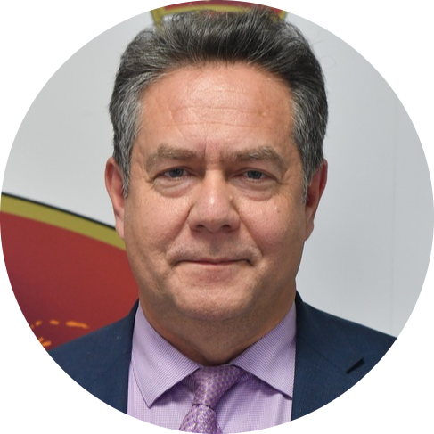

|  |
Николай ПлатошкинСоветский и российский дипломат, историк и политолог, общественный и политический деятель. Доктор исторических наук, доцент, заведующий кафедрой международных отношений и дипломатии Московского гуманитарного университета. Автор ряда работ по истории XX века и переводов зарубежных монографий, в прошлом — политический эксперт на телевидении. Лидер движения "За новый социализм". |
| Даты | Работа |
| 1987-1992 | Атташе в посольствах СССР и Российской Федерации в ФРГ |
| 1992-1995 | Атташе в четвёртом Европейском департаменте МИД России |
| 1998 | Возглавил отдел Армении МИД России |
| 2004-2006 | D должности вице-консула работал в консульстве России в Хьюстоне |
| Английский | ⭐⭐⭐⭐⭐ |
| Испанский | ⭐⭐⭐⭐ |
| Чешский | ⭐⭐ |
| Немецкий | ⭐⭐⭐⭐ |